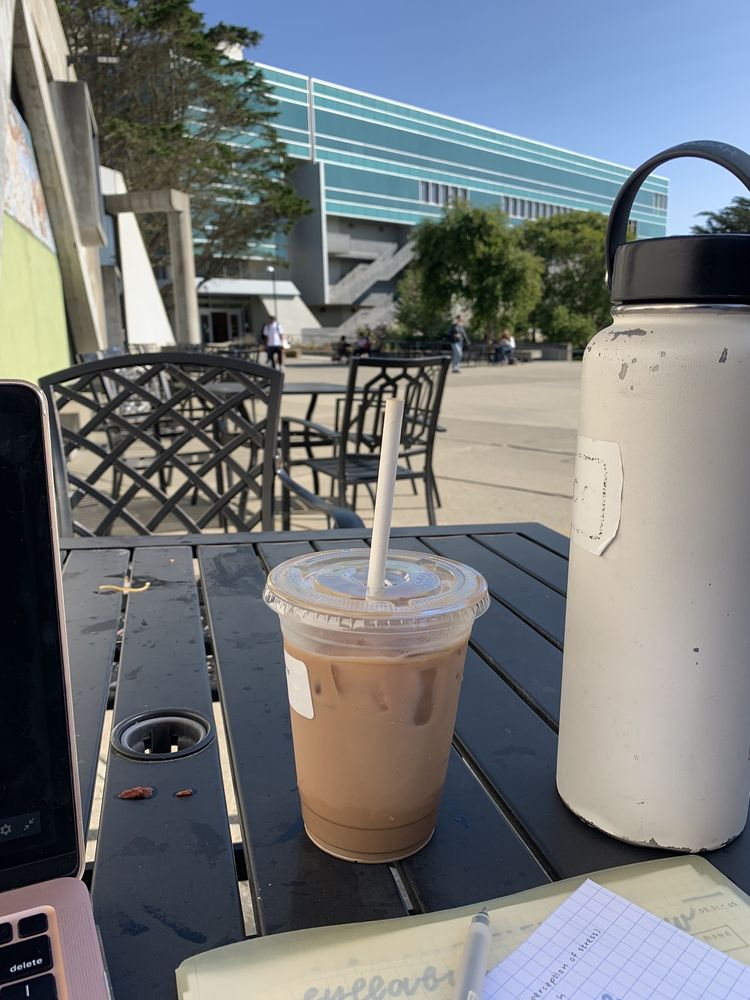
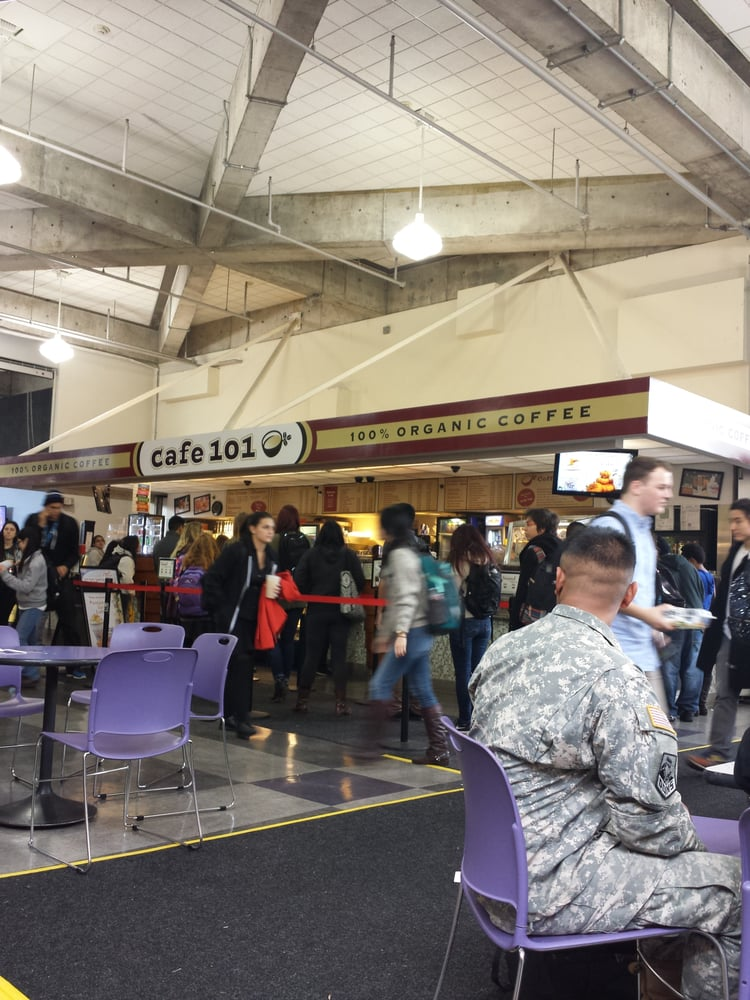

Cafe 101 is a coffee shop that has been around for 25 years, and is one of the cafe's standing in SFSU.
They have been evolving their menu evr since, and has gave students the needed caffeine boost and snacks
to get through their days. The person that founded it was named John Doe, and started reaching out to the
SFSU representatives and president to help students go through their academic year with this cafe. It has
started with only 4 things on the menu; Coffee, Bagels, Pasteries, and Lattes. And ever since the years
that has went on, they produced more and more items on the menu. It is located in the Cesar Chavez
building near the quad, and if you want to get a cup of coffee or a snack, order with us anytime!

Picture taken by a student!
Commented: "What a fun day here in SFSU, had some Cafe 101 coffee and ready to go!"

Picture taken by a student!
Commented: "Had some of the pictures left over in my photodshoot for Cafe 101!"